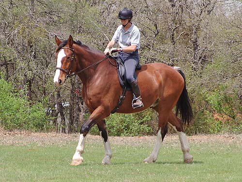

Kanuk - Out at the
Kennels Kanuk got to take a ride out to the kennels
this week. I took
him the night before roading so I could
see how he settled without
the excitement of the other horses there.
He was concerned by
the hounds and distracted by the other
horse, but not to the point
of acting silly. He tied to the trailer
and was very sweet about
tacking up. It was obvious that he was
looking to me for
comfort and confidence.
That night we got in some lunging and
a short ride, and the next morning he
got to see all the horses out. After working
the hounds, Chrissie
got a ride in. We agreed he'd stay for
the week to have access
to the hounds and she'd ride him out when
she had time.
I'm hoping that in a few weeks he'll be
ready for me to take him
on the hunt trail ride. Of course that
means I have to get ride time in on him,
but I'll have him back at home next week,
and daylight savings time is finally here.
Quite satisfied to leave the other
horse in the pasture and go off and work alone.

He's got a ground covering walk, and
there doesn't seem to be a need to nag him to move on.
He's responsive to the bridle for
turning and whoa.
When Chrissie asked for softening,
he eventually started to give.
But sometimes he told her that he
wasn't sure what she was asking for.
He was easy in the trot. Forward without
asking and comfortable to ride. I haven't felt his trot yet, but her comments
were encouraging that he wouldn't be as bouncy as Emma.
I like how up he is in front and willing
to reach. His trot was very steady and relaxed.
Chrissie was consistent with asking
for a little flex, and every once in a while he'd give the answer she was
asking for.
And sometimes he'd resist. He tries
very hard to do what's right, so it won't take long for him to understand
what we want.
He's big, but gives a comfortable
ride.
He'd balance himself over the uneven
ground.
Going by the kennels and not focusing
on the hounds. I think a few days of being around them and he'll start
to realize that they're just a part of the scenery.
He's quite safe and content on a loose
rein.
When I got off of him, I didn't think
about how far down the ground was. He doesn't ride like a draft horse.
But, I have to remember so I don't sting my feet on landing.